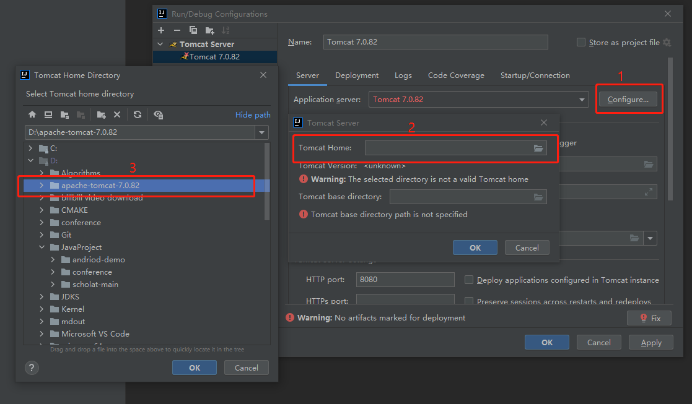

前言
由于要整合Scholat主站和Scholat+站点的资源，汤老师向我们提出了做单点登录的需求，因此需要对主站的登录功能部分做出改动。但主站项目是一个老项目，用的是SSH架构，没有Maven包管理，代码托管在SVN上，老师兄们用的都是MyEclipse开发，对于我这种人来说绝对忍不了，一定要用Intelij IDEA开发。经过一晚上的摸爬滚打和师兄的指点迷津后，现将导入的过程记录为文档，为以后师弟师妹的开发维护铺平道路。
准备工作
首先需要准备以下的工具和对应的版本：
- Intelij IDEA Ultimate Edition 2021.2.1（旗舰版IDE，功能齐全，相比于师兄的旧版IDEA，导入过程中多了一些自动配置项，方便一些，下载地址点这里）
- Tortoise Subversion（SVN工具，下载地址点这里）
- Apache Tomcat 7.0.82（Web容器，与主站使用的版本对应，8以上的不兼容JDK6，建议直接用这个版本，下载地址点这里）
- Java JDK6（需要注册一个Oracle账号，下载地址点这里）
以上工具下载完成后安装，记住自己选择的安装路径。
导入项目
打开IDEA，在欢迎界面右上角点击Get from VCS。
版本控制工具选Subversion，点击下面+号，输入仓库地址，账号密码找华哥要，选择记住账号密码（一定要记住账号密码，否则跑不起来的，项目会检查SVN配置），添加之后就能看到下图中的一个仓库地址了。
点击Check out后，选择一个项目的存放地址，就开始拉取源码了。代码拉取完成后IDEA会自动打开项目，并提示发现了一个IDEA的配置文件，是否重复使用，这里我们点否，毕竟是别人的配置文件，这里我们不能照搬使用。
等项目索引完之后，关闭项目，打开项目存放的文件夹，将文件夹中的.idea和trunk.iml删掉，并将该项目从IDEA中移除（不是删除项目文件夹）。
随便打开另外一个项目，在左上角选择File -> New -> Project from Existing Sources，导入刚刚拉取的代码。
第一步直接选择Create project from existing sources，然后Next。
第二步也不用改，除非想换个项目名称，然后Next。
第三步，接着IDEA会扫描项目，并自动标记项目文件夹的类型，聪明的IDEA一般不会标记错的，这里选择Mark All，然后Next。
第四步，IDEA会扫描依赖库文件夹，并自动添加为依赖库，如果这里搞不懂项目用到了哪些依赖的话，建议全部勾选，然后Next。
第五步，也是跟项目依赖有关，直接按照IDEA给出的意见即可，点击Next。
第六步，选择项目使用的JDK，这里我们选择刚刚安装JDK6，然后点Next。
第七步，IDEA会扫描项目使用的框架，然后标记框架的配置文件，这里全部勾选即可，然后点Finish。
到此，项目的导入部分到此完成，下一节中将介绍如何配置项目。
配置项目
配置Project Structure
点击File -> Project Structure，打开项目配置。
在Project页面确认使用的JDK版本为6，编译语言等级与JDK版本一致为6。
在Modules页面，将conf文件夹标记为源码文件夹。
在Libraries页面，将Tomcat中的js-api.jar和servlet-api.jar包添加到依赖库中，这两个包在Tomcat7安装路径的./lib目录下。
在Facts页面，正常情况下，IDEA在导入时就已经自动配置好了，如果没有看到Web这项配置可以手动添加一下，因为还没有创建Artifacts，所以有个警告也是正常的。
在Artifacts页面，点击+ -> WebApplication:Exploded -> From modules...，选择本项目配置好的Modules，点击OK。
项目有关的配置到此为止，接下来时配置启动项目的容器Tomcat
配置Tomcat
点击IDEA界面右上角的Add Configuration，打开运行配置
在Server页面中点击+ -> Tomcat Server -> Local，名字自定义一个，点击Application server右边的Configure按钮，选择准备工作中下载的Tomcat7的解压位置。

继续在Server页面中找到VM options，填入以下参数：-Xms1024m -Xmx4096m -XX:PermSize=4096m -XX:MaxPermSize=4096m。该参数防止Tomcat内存太小导致项目跑不起来。
在Deployment页面中，点击+ -> Artifact，将项目添加到容器中，同时Application context一定要改为/scholat。
至此，所有的配置工作均已完成，尝试编译运行一下。
跑起来
点击小锤子编译，看看有没有编译出错等问题，如果没有问题，点击运行跑起来看看效果。
如果电脑配置不是很好的话，需要耐心等待一下，毕竟这项目还挺大的。
编译没有错误的话，就可以启动容器看看能不能跑起来了，跑起来也需要耐心等待一下，要启动的东西还挺多的。
Tips
如果Tomcat运行输出的是乱码，则需要修改一下Tomcat的日志输出编码，打开Tomcat目录中的conf/logging.properties文件，将所有UTF-8全部改为GBK即可。